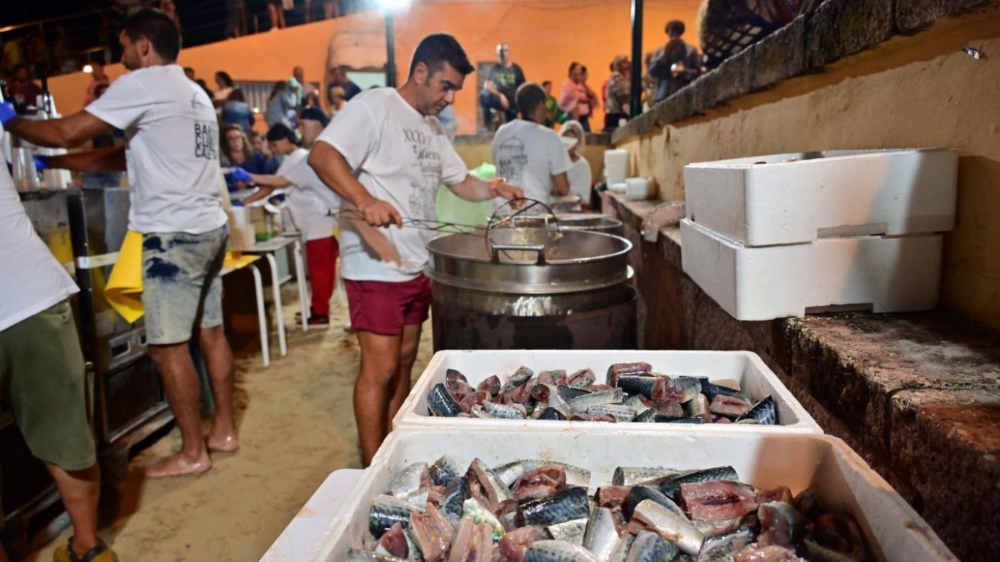

El Entierro de la Caballa es una de las fiestas más singulares y tradicionales de Cádiz, que se celebra cada año al finalizar el verano, principalmente en el Barrio de La Viña. Este evento simboliza la despedida de la temporada estival y tiene un carácter festivo y satírico, muy en la línea del espíritu gaditano. Lo que hace especial a esta festividad es su capacidad para transformar un acto simbólico en una experiencia colectiva cargada de humor y creatividad. Las calles se llenan de disfraces, música y un ambiente bullicioso donde la participación de los vecinos es fundamental.
Caracteristicas
Orígenes y significado
La fiesta rinde homenaje a la caballa, un pescado muy popular en Cádiz, especialmente en las zonas cercanas a la Playa de La Caleta. Antiguamente, los pescadores vendían y pregonaban este pescado por las calles de la ciudad. Hoy en día, es típico degustarla en terrazas y bares, especialmente en la Plaza del Tío de la Tiza y la Calle de La Palma.
El entierro simboliza no solo el final del verano, sino también la nostalgia por las tradiciones que se desvanecen con el paso del tiempo.
Desarrollo de la fiesta
La celebración comienza al atardecer, cuando un cortejo fúnebre recorre las calles del barrio. El desfile es encabezado por una gran caballa artesanal fabricada especialmente para la ocasión. Alrededor de ella, participan vecinos disfrazados de plañideras, que lloran exageradamente, lamentando el "fin de la caballa" y, con ello, el cierre de la temporada veraniega.
El recorrido termina en la Playa de La Caleta, donde la enorme caballa es finalmente quemada, en un acto cargado de simbolismo. La hoguera representa la despedida del verano y la preparación para la llegada de nuevas estaciones.

Ambiente y participación
Como buena fiesta gaditana, el Entierro de la Caballa es una mezcla de humor, música y alegría. Vecinos y visitantes se unen para participar en este evento, que combina tradición y diversión. Además, suele ir acompañado de comida, bebida y actuaciones que animan la celebración hasta altas horas de la noche.